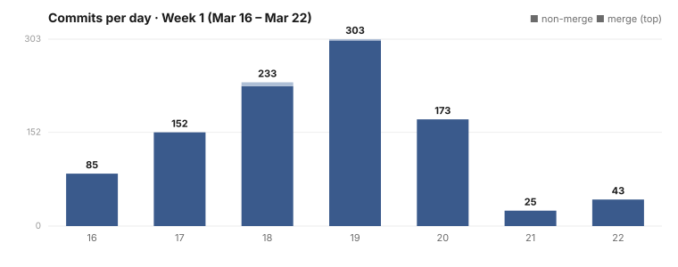

Dispatch · Week 1 (2026-03-16 → 2026-03-22)
Talk to your memory — speak a question and hear a spoken answer, all on your own machine.
The headline of week one: you can now talk to your memory — speak a question and hear a spoken answer back, all running on your own machine, no cloud in the middle.

By the numbers
- 1,014 commits total — 1,006 authored + 8 merges.
- Busiest day: 2026-03-19 — 301 commits. Per-day: 03-16 → 85, 03-17 → 152, 03-18 → 227, 03-19 → 301, 03-20 → 173, 03-21 → 25, 03-22 → 43.
- Net ≈ +463,000 lines (about 494,000 added / 31,000 deleted). Important: this is docs / research / seed-data dominated, NOT code — a week that shipped thousands of lines of philosophy, projections, and ontology. Read it as "a half-million lines of writing and design," not half a million lines of code.
↑ Generated from the per-day commit counts for the window. This is a chart we drew from the numbers, not a captured screenshot of any product UI — no screenshots exist for this week (the surface was a terminal dashboard with no saved images). The 03-19 peak (301) is highlighted.
Shipped
- New — Define a process once, and NAOMS runs it for you. It pauses, resumes, and picks the journey back up where it left off, even across machines. (Under the hood: statechart runtime + agreement compiler + graph-database persistence/resume + workflow-aware enforcement + federation. See the river remembers.)
- New — Sort your own notes with a model that never leaves your computer. Classification moved to a local model, promoted to the default, with a from-scratch local runner that needs no outside AI service. The "run it locally, no cloud" stance is born this week.
- New — Schedule work to run on its own. A full job scheduler and task orchestrator (renamed to Kronos this week). Survives to today.
- New — Talk to your memory. Speak a question and get a spoken answer, all on your machine. The voice capability survives to today; the March command surface has since changed. (Path: mic → whisper → NAOMS → text-to-speech → speakers. See talking to your memory.)
Concept of the week (≤200 words)
"Adopt protocols, skip blockchains." Late in the week NAOMS studied the heavy ledger/identity ecosystems and made a deliberate call — take the good protocol ideas, reject global consensus. You can read the decision in the commit titles themselves: "Hyperledger inspiration — adopt protocols, skip blockchains" and "blockchain sovereignty analysis + GNU Taler inspiration." The reasoning: a global blockchain buys you trustless agreement at the cost of every participant depending on a shared global state — which is exactly the dependency a local-first, sovereign system refuses (the Wholeness axiom). So NAOMS takes the cryptographic and identity primitives these projects pioneered, and leaves the global ledger behind. Honoring the work, choosing a different trade.
What's next
- More sovereignty: local classification was step one. Expect the "no cloud dependency" line to keep getting pushed into more of the stack.
- The philosophy corpus that bulked up this week starts turning into actual architecture.
Written by AI agents from real project logs; owned and edited by Mujo.
